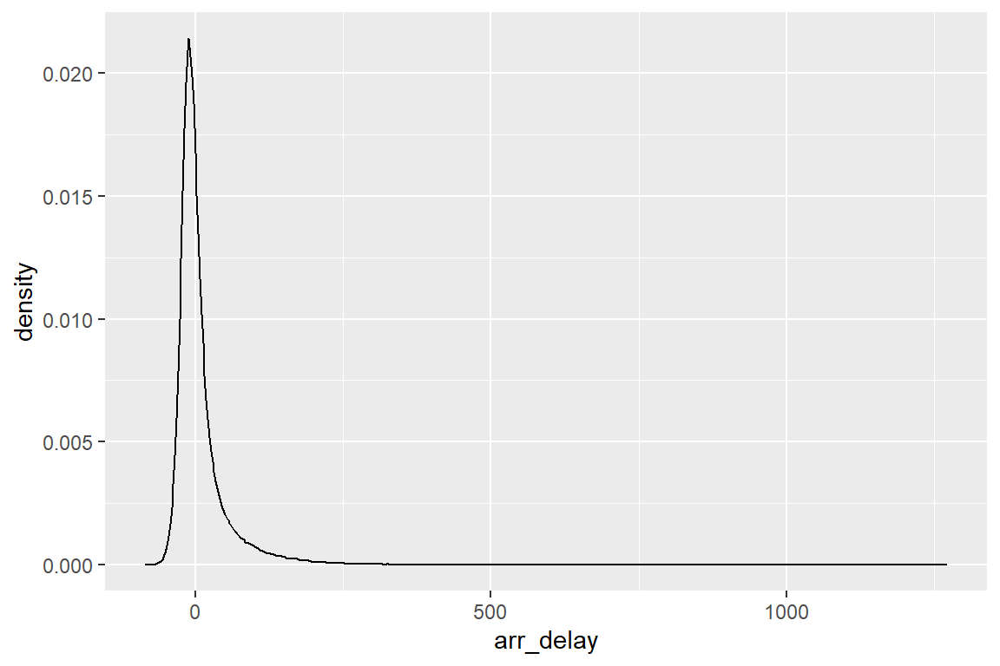

R y el Tidyverse
Clase 1
19 de marzo de 2025
Introducción a R
¿Por qué usar R?
En un nivel, no hay una razón para cambiar de software estadístico si el que usas actualmente funciona para tus necesidades.
¿Por qué usar R?
Sin embargo, estas son algunas razones para mudar tus operaciones estadísticas a R:
- Cutting-edge applications: La principal ventaja de usar R es que podemos encontrar paquetes estadísticos que facilitan la implementación de los métodos estadísticos más avanzados.
- Reproducibilidad de resultados: No es muy diferente de otros lenguajes de programación estadística como Stata, SAS o Python, pero es na caracterísitica indispensable en la producción de reportes científicos que otras herramientas como Excel no ofrecen.
¿Por qué usar R?
-
Comunidad y soporte de calidad: Hay una comunidad muy activa de usuarios de R que comparten sus conocimientos y paquetes en línea. Si te topas con un problema, seguramente alguien ya hizo un paquete que lo resuelve.
Si tienes la intención de invertir el esfuerzo para aprender un software estadístico, la estructura de R y la facilidad para escribir tus propias funciones (y paquetes) son atracciones poderosas.
- Es gratis: Es un software con una integración formidable, y es completamente tuyo por el precio de una descarga (y la inversión de aprender a sacarle provecho).
R es una calculadora glorificada
[1] 4R permite declarar variables on the fly
Vectores y operaciones vectoriales
Pregunta: ¿Cómo llegamos al resultado en el vector g?
Clases de vectores
[1] "numeric"R es muy amigable al usuario
R ayuda mucho al usuario. Otros lenguajes pudieron haber arrojado un error a la hora de definir al vector k a partir de vectores de diferentes clases. Sin embargo, R hizo lo siguiente para evitar el error:
Funciones
Escribamos una función que calcule el área de un círculo, dado su radio.
Funciones vectorizadas
Ojo: En el ejemplo anterior, R nos volvió a ayudar.
Pudo interpretar que la función area_circulo debía aplicarse a cada elemento del vector radios y nos devolvió un vector con las áreas correspondientes.
Esto fue posible porque el contenido de la función area_circulo es vectorizado. No siempre será así, pero en esta ocasión, R pudo ayudarnos.
Otras veces, tendremos que aplicar una función a cada elemento de un vector con ayuda de funciones como lapply o sapply. También veremos cómo hacer programación funcional con purrr para hacer muchas computaciones de manera más eficiente.
Orden de operaciones
Otra cosa para destacar es que R guarda el orden de operaciones.
La función area_circulo regresa el resultado para la expresión \(\pi r^2\) y no para \(\pi (r^2)\).
No tuvimos que especificar el orden de operaciones, escribiendo pi * (r^2), R lo hizo por nosotros.
Funciones de base R
R tiene funciones estadísticas precargadas.
Por ejemplo, podemos generar números aleatorios a partir de una variedad de distribuciones teóricas.
rnormgenera números aleatorios de una distribución normalrunifa partir de una distribución uniforme
Funciones de base R
También podemos calcular la media, la desviación estándar, la longitud y la clase de un vector de números.
Puedes consultar la documentación de cualquier función con el comando ? seguido del nombre de la función. Por ejemplo: ?rnorm.
Paquetes del Tidyverse
Base R vs. Tidyverse
Hasta ahora, solo hemos visto cómo usar R con funciones de base. Sin embargo, la comunidad de R ha desarrollado una serie de paquetes que abren las puertas a nuevos mundos de análisis de datos.
El Tidyverse es un conjunto de paquetes de R diseñados para la ciencia de datos. Todos los paquetes del Tidyverse comparten una filosofía de diseño, gramática y estructura de datos.
El libro de Wickham, Cetinkaya-Rundel, y Grolemund (2023) es una excelente referencia para aprender ciencia de datos con R.
Instalación de paquetes
Hay dos formas de instalar paquetes en R:
- Usando el comando base
install.packages(), lo que además requiere cargar el paquete en la sesión cada vez que se inicia R.
- O, alternativamente, usando el paquete
pacman. Solo necesitamos instalarlo una vez.
También podemos llamar paquetes instalados, pero que no están cargados en la sesión, escribiendo el nombre del paquete, seguido de :: y el nombre de la función, como cuando llamamos a la función p_load del paquete pacman, sin cargar el paquete en la sesión.
Paquetes del Tidyverse
Al instalar el Tidyverse, instalamos un conjunto de paquetes que podemos examinar llamando:
[1] "broom" "conflicted" "cli" "dbplyr"
[5] "dplyr" "dtplyr" "forcats" "ggplot2"
[9] "googledrive" "googlesheets4" "haven" "hms"
[13] "httr" "jsonlite" "lubridate" "magrittr"
[17] "modelr" "pillar" "purrr" "ragg"
[21] "readr" "readxl" "reprex" "rlang"
[25] "rstudioapi" "rvest" "stringr" "tibble"
[29] "tidyr" "xml2" "tidyverse" Tablas de datos con tibble
Estructura de los datos
Una de las convenciones más importantes del Tidyverse es el uso de tablas en formato tibble para alojar datos, que siempre guardan la misma estructura:
las columnas son variables
las filas son observaciones
las celdas son valores
Una tabla tibble representa una o varias métricas de una o varias observaciones.
Estructura de los datos

Tres reglas de tablas limpias. Fuente: Wickham, Cetinkaya-Rundel, y Grolemund (2023)
Escribir tablas con tibble
Podemos escribir una tabla tibble de la siguiente manera:
Las tablas son un arreglo de vectores
Las tablas tibble son arreglos de vectores, donde cada columna es un vector.
Podemos accederlas de dos maneras:
- Usando base R:
Manipulación de datos con dplyr
nyflights13
Ya conocemos la estructura de trabajo con tablas tibble.
Ahora, vamos a trabajar con un conjunto de datos del mundo real.
nycflights13 es un paquete de datos que contiene información sobre todos los vuelos que salieron de los aeropuertos de Nueva York en 2013.
Los datos provienen del Bureau of Transportation Statistics de los Estados Unidos y podemos ir a la documentación con ?flights.
Cargamos el paquete con pacman:
nyflights13
# A tibble: 336,776 × 19
year month day dep_time sched_dep_time dep_delay arr_time sched_arr_time
<int> <int> <int> <int> <int> <dbl> <int> <int>
1 2013 1 1 517 515 2 830 819
2 2013 1 1 533 529 4 850 830
3 2013 1 1 542 540 2 923 850
4 2013 1 1 544 545 -1 1004 1022
5 2013 1 1 554 600 -6 812 837
6 2013 1 1 554 558 -4 740 728
7 2013 1 1 555 600 -5 913 854
8 2013 1 1 557 600 -3 709 723
9 2013 1 1 557 600 -3 838 846
10 2013 1 1 558 600 -2 753 745
# ℹ 336,766 more rows
# ℹ 11 more variables: arr_delay <dbl>, carrier <chr>, flight <int>,
# tailnum <chr>, origin <chr>, dest <chr>, air_time <dbl>, distance <dbl>,
# hour <dbl>, minute <dbl>, time_hour <dttm>nyflights13
Rows: 336,776
Columns: 19
$ year <int> 2013, 2013, 2013, 2013, 2013, 2013, 2013, 2013, 2013, 2…
$ month <int> 1, 1, 1, 1, 1, 1, 1, 1, 1, 1, 1, 1, 1, 1, 1, 1, 1, 1, 1…
$ day <int> 1, 1, 1, 1, 1, 1, 1, 1, 1, 1, 1, 1, 1, 1, 1, 1, 1, 1, 1…
$ dep_time <int> 517, 533, 542, 544, 554, 554, 555, 557, 557, 558, 558, …
$ sched_dep_time <int> 515, 529, 540, 545, 600, 558, 600, 600, 600, 600, 600, …
$ dep_delay <dbl> 2, 4, 2, -1, -6, -4, -5, -3, -3, -2, -2, -2, -2, -2, -1…
$ arr_time <int> 830, 850, 923, 1004, 812, 740, 913, 709, 838, 753, 849,…
$ sched_arr_time <int> 819, 830, 850, 1022, 837, 728, 854, 723, 846, 745, 851,…
$ arr_delay <dbl> 11, 20, 33, -18, -25, 12, 19, -14, -8, 8, -2, -3, 7, -1…
$ carrier <chr> "UA", "UA", "AA", "B6", "DL", "UA", "B6", "EV", "B6", "…
$ flight <int> 1545, 1714, 1141, 725, 461, 1696, 507, 5708, 79, 301, 4…
$ tailnum <chr> "N14228", "N24211", "N619AA", "N804JB", "N668DN", "N394…
$ origin <chr> "EWR", "LGA", "JFK", "JFK", "LGA", "EWR", "EWR", "LGA",…
$ dest <chr> "IAH", "IAH", "MIA", "BQN", "ATL", "ORD", "FLL", "IAD",…
$ air_time <dbl> 227, 227, 160, 183, 116, 150, 158, 53, 140, 138, 149, 1…
$ distance <dbl> 1400, 1416, 1089, 1576, 762, 719, 1065, 229, 944, 733, …
$ hour <dbl> 5, 5, 5, 5, 6, 5, 6, 6, 6, 6, 6, 6, 6, 6, 6, 5, 6, 6, 6…
$ minute <dbl> 15, 29, 40, 45, 0, 58, 0, 0, 0, 0, 0, 0, 0, 0, 0, 59, 0…
$ time_hour <dttm> 2013-01-01 05:00:00, 2013-01-01 05:00:00, 2013-01-01 0…Pregunta: ¿Cuál es el nivel de observación de los datos?
También puedes usar View(flights) para ver los datos en una ventana de visualización.
Verbos de dplyr
Vamos a aprender los verbos (funciones) principales de dplyr, con los que podemos resolver una vasta cantidad de problemas de manipulación de datos.
¿Qué tienen en común los verbos de dplyr?
Su primer argumento es una
tibble.Los siguientes argumentos típicamente describen qué columnas operar usando los nombres de las variables sin comillas.
Siempre devuelven una
tibble.
Anidación de funciones con el pipe |>
Muy frcuentemente, vas a querer realizar varias operaciones en una tabla de datos.
En lugar de guardar el resultado de cada operación en un objeto, puedes anidar las funciones con el operador |>.
Anidación de funciones con el pipe |>
Ejemplo 1 Imagina que queremos encontrar el vuelo más rápido al aeropueto de Houston IAH.
Necesitarás combinar las funciones filter(), mutate(), select() y arrange().
Solución 1.
# A tibble: 7,198 × 7
year month day dep_time carrier flight speed
<int> <int> <int> <int> <chr> <int> <dbl>
1 2013 7 9 707 UA 226 522.
2 2013 8 27 1850 UA 1128 521.
3 2013 8 28 902 UA 1711 519.
4 2013 8 28 2122 UA 1022 519.
5 2013 6 11 1628 UA 1178 515.
6 2013 8 27 1017 UA 333 515.
7 2013 8 27 1205 UA 1421 515.
8 2013 8 27 1758 UA 302 515.
9 2013 9 27 521 UA 252 515.
10 2013 8 28 625 UA 559 515.
# ℹ 7,188 more rowsAnidación de funciones con el pipe |>
¿Qué pasaría si no usamos el operador |>?
Una opción es anidar las funciones con paréntesis:
Solución 2.
# A tibble: 7,198 × 7
year month day dep_time carrier flight speed
<int> <int> <int> <int> <chr> <int> <dbl>
1 2013 7 9 707 UA 226 522.
2 2013 8 27 1850 UA 1128 521.
3 2013 8 28 902 UA 1711 519.
4 2013 8 28 2122 UA 1022 519.
5 2013 6 11 1628 UA 1178 515.
6 2013 8 27 1017 UA 333 515.
7 2013 8 27 1205 UA 1421 515.
8 2013 8 27 1758 UA 302 515.
9 2013 9 27 521 UA 252 515.
10 2013 8 28 625 UA 559 515.
# ℹ 7,188 more rowsAnidar funciones con el pipe |>
Otra opción es guardar los pasos intermedios en objetos:
Solución 3.
# A tibble: 7,198 × 7
year month day dep_time carrier flight speed
<int> <int> <int> <int> <chr> <int> <dbl>
1 2013 7 9 707 UA 226 522.
2 2013 8 27 1850 UA 1128 521.
3 2013 8 28 902 UA 1711 519.
4 2013 8 28 2122 UA 1022 519.
5 2013 6 11 1628 UA 1178 515.
6 2013 8 27 1017 UA 333 515.
7 2013 8 27 1205 UA 1421 515.
8 2013 8 27 1758 UA 302 515.
9 2013 9 27 521 UA 252 515.
10 2013 8 28 625 UA 559 515.
# ℹ 7,188 more rowsAnidación de funciones con el pipe |>
¿Cuál de las tres soluciones deja un código más limpio y fácil de leer?
Grupos y agregaciones
Hasta ahora, hemos visto verbos que trabajan con filas y columnas. Ahora veremos que dplyr se vuelve más poderoso cuando agregamos la posibilidad de trabajar con grupos.
Las funciones que discutiremos son group_by() y summarize().
group_by()
Usamos group_by() para dividir el conjunto de datos en grupos con un significado.
# A tibble: 336,776 × 19
# Groups: month [12]
year month day dep_time sched_dep_time dep_delay arr_time sched_arr_time
<int> <int> <int> <int> <int> <dbl> <int> <int>
1 2013 1 1 517 515 2 830 819
2 2013 1 1 533 529 4 850 830
3 2013 1 1 542 540 2 923 850
4 2013 1 1 544 545 -1 1004 1022
5 2013 1 1 554 600 -6 812 837
6 2013 1 1 554 558 -4 740 728
7 2013 1 1 555 600 -5 913 854
8 2013 1 1 557 600 -3 709 723
9 2013 1 1 557 600 -3 838 846
10 2013 1 1 558 600 -2 753 745
# ℹ 336,766 more rows
# ℹ 11 more variables: arr_delay <dbl>, carrier <chr>, flight <int>,
# tailnum <chr>, origin <chr>, dest <chr>, air_time <dbl>, distance <dbl>,
# hour <dbl>, minute <dbl>, time_hour <dttm>group_by()no cambia los datos, pero si te fijas bien, verás que el resultado indica que está “agrupado por” la variable month. Esto significa que las operaciones subsesuentes se aplicarán a cada grupo.
summarize()
Usamos summarize()1 para resumir los datos en cada grupo: obtendremos una nueva tabla con una observación por cada grupo.
# A tibble: 12 × 3
month avg_delay n
<int> <dbl> <int>
1 1 10.0 27004
2 2 10.8 24951
3 3 13.2 28834
4 4 13.9 28330
5 5 13.0 28796
6 6 20.8 28243
7 7 21.7 29425
8 8 12.6 29327
9 9 6.72 27574
10 10 6.24 28889
11 11 5.44 27268
12 12 16.6 28135Las funciones slice_
Considera la siguiente operación:
# A tibble: 108 × 19
# Groups: dest [105]
dest arr_delay year month day dep_time sched_dep_time dep_delay arr_time
<chr> <dbl> <int> <int> <int> <int> <int> <dbl> <int>
1 ABQ 153 2013 7 22 2145 2007 98 132
2 ACK 221 2013 7 23 1139 800 219 1250
3 ALB 328 2013 1 25 123 2000 323 229
4 ANC 39 2013 8 17 1740 1625 75 2042
5 ATL 895 2013 7 22 2257 759 898 121
6 AUS 349 2013 7 10 2056 1505 351 2347
7 AVL 228 2013 8 13 1156 832 204 1417
8 BDL 266 2013 2 21 1728 1316 252 1839
9 BGR 238 2013 12 1 1504 1056 248 1628
10 BHM 291 2013 4 10 25 1900 325 136
# ℹ 98 more rows
# ℹ 10 more variables: sched_arr_time <int>, carrier <chr>, flight <int>,
# tailnum <chr>, origin <chr>, air_time <dbl>, distance <dbl>, hour <dbl>,
# minute <dbl>, time_hour <dttm>¿Qué hace la función slice_max()?
Aplicación de funciones a varias columnas
Ejemplo 2 ¿Cuál es el promedio de cada una de las variables numéricas en la tabla flights?
Aplicación de funciones a varias columnas
Tenemos 14 columnas numéricas en la tabla flights. No sería imposible escribir una línea de código para cada una, pero sería tedioso y propenso a errores.
Además, hay conjuntos de datos con muchas más columnas que flights, en las que escribir una línea de código para cada variable numérica sería demasiado costoso.
across()
Across permite aplicar una función a varias columnas de una tabla de datos, sea dentro de summarize() o de mutate().
Para resolver el Ejemplo 2, haríamos lo siguiente:
Solución 4 (across).
# A tibble: 1 × 14
year month day dep_time sched_dep_time dep_delay arr_time sched_arr_time
<dbl> <dbl> <dbl> <dbl> <dbl> <dbl> <dbl> <dbl>
1 2013 6.55 15.7 1349. 1344. 12.6 1502. 1536.
# ℹ 6 more variables: arr_delay <dbl>, flight <dbl>, air_time <dbl>,
# distance <dbl>, hour <dbl>, minute <dbl>Usando pivot_longer()
Otra solución es usar la función pivot_longer() para convertir las columnas en filas, y despues calcular el promedio agrupando por variable.
Solución 5 (pivot_longer).
# A tibble: 4,714,864 × 7
carrier tailnum origin dest time_hour variable value
<chr> <chr> <chr> <chr> <dttm> <chr> <dbl>
1 UA N14228 EWR IAH 2013-01-01 05:00:00 year 2013
2 UA N14228 EWR IAH 2013-01-01 05:00:00 month 1
3 UA N14228 EWR IAH 2013-01-01 05:00:00 day 1
4 UA N14228 EWR IAH 2013-01-01 05:00:00 dep_time 517
5 UA N14228 EWR IAH 2013-01-01 05:00:00 sched_dep_time 515
6 UA N14228 EWR IAH 2013-01-01 05:00:00 dep_delay 2
7 UA N14228 EWR IAH 2013-01-01 05:00:00 arr_time 830
8 UA N14228 EWR IAH 2013-01-01 05:00:00 sched_arr_time 819
9 UA N14228 EWR IAH 2013-01-01 05:00:00 arr_delay 11
10 UA N14228 EWR IAH 2013-01-01 05:00:00 flight 1545
# ℹ 4,714,854 more rows# A tibble: 14 × 2
variable avg
<chr> <dbl>
1 air_time 151.
2 arr_delay 6.90
3 arr_time 1502.
4 day 15.7
5 dep_delay 12.6
6 dep_time 1349.
7 distance 1040.
8 flight 1972.
9 hour 13.2
10 minute 26.2
11 month 6.55
12 sched_arr_time 1536.
13 sched_dep_time 1344.
14 year 2013 Joins
Les recomiendo leer el capítulo 19 de R for Data Science para entender a profundidad las operaciones de joins (Wickham, Cetinkaya-Rundel, y Grolemund 2023).
left_join()
Haremos un ejemplo muy sencillo de un left_join().
Recordemos cómo se ve la tabla flights:
Rows: 336,776
Columns: 19
$ year <int> 2013, 2013, 2013, 2013, 2013, 2013, 2013, 2013, 2013, 2…
$ month <int> 1, 1, 1, 1, 1, 1, 1, 1, 1, 1, 1, 1, 1, 1, 1, 1, 1, 1, 1…
$ day <int> 1, 1, 1, 1, 1, 1, 1, 1, 1, 1, 1, 1, 1, 1, 1, 1, 1, 1, 1…
$ dep_time <int> 517, 533, 542, 544, 554, 554, 555, 557, 557, 558, 558, …
$ sched_dep_time <int> 515, 529, 540, 545, 600, 558, 600, 600, 600, 600, 600, …
$ dep_delay <dbl> 2, 4, 2, -1, -6, -4, -5, -3, -3, -2, -2, -2, -2, -2, -1…
$ arr_time <int> 830, 850, 923, 1004, 812, 740, 913, 709, 838, 753, 849,…
$ sched_arr_time <int> 819, 830, 850, 1022, 837, 728, 854, 723, 846, 745, 851,…
$ arr_delay <dbl> 11, 20, 33, -18, -25, 12, 19, -14, -8, 8, -2, -3, 7, -1…
$ carrier <chr> "UA", "UA", "AA", "B6", "DL", "UA", "B6", "EV", "B6", "…
$ flight <int> 1545, 1714, 1141, 725, 461, 1696, 507, 5708, 79, 301, 4…
$ tailnum <chr> "N14228", "N24211", "N619AA", "N804JB", "N668DN", "N394…
$ origin <chr> "EWR", "LGA", "JFK", "JFK", "LGA", "EWR", "EWR", "LGA",…
$ dest <chr> "IAH", "IAH", "MIA", "BQN", "ATL", "ORD", "FLL", "IAD",…
$ air_time <dbl> 227, 227, 160, 183, 116, 150, 158, 53, 140, 138, 149, 1…
$ distance <dbl> 1400, 1416, 1089, 1576, 762, 719, 1065, 229, 944, 733, …
$ hour <dbl> 5, 5, 5, 5, 6, 5, 6, 6, 6, 6, 6, 6, 6, 6, 6, 5, 6, 6, 6…
$ minute <dbl> 15, 29, 40, 45, 0, 58, 0, 0, 0, 0, 0, 0, 0, 0, 0, 59, 0…
$ time_hour <dttm> 2013-01-01 05:00:00, 2013-01-01 05:00:00, 2013-01-01 0…left_join()
La columna carrier incluye el código de la aerolínea a la que el vuelo pertenece.
Pero no queda exactamente claro qué aerolínea es.
left_join()
Al consultar la documentación usando ?flights, encontramos que la tabla airlines contiene el nombre de las aerolíneas.
# A tibble: 16 × 2
carrier name
<chr> <chr>
1 9E Endeavor Air Inc.
2 AA American Airlines Inc.
3 AS Alaska Airlines Inc.
4 B6 JetBlue Airways
5 DL Delta Air Lines Inc.
6 EV ExpressJet Airlines Inc.
7 F9 Frontier Airlines Inc.
8 FL AirTran Airways Corporation
9 HA Hawaiian Airlines Inc.
10 MQ Envoy Air
11 OO SkyWest Airlines Inc.
12 UA United Air Lines Inc.
13 US US Airways Inc.
14 VX Virgin America
15 WN Southwest Airlines Co.
16 YV Mesa Airlines Inc. left_join()
Puedo agregar esta información a la tabla flights con un left_join().
Rows: 336,776
Columns: 20
$ year <int> 2013, 2013, 2013, 2013, 2013, 2013, 2013, 2013, 2013, 2…
$ month <int> 1, 1, 1, 1, 1, 1, 1, 1, 1, 1, 1, 1, 1, 1, 1, 1, 1, 1, 1…
$ day <int> 1, 1, 1, 1, 1, 1, 1, 1, 1, 1, 1, 1, 1, 1, 1, 1, 1, 1, 1…
$ dep_time <int> 517, 533, 542, 544, 554, 554, 555, 557, 557, 558, 558, …
$ sched_dep_time <int> 515, 529, 540, 545, 600, 558, 600, 600, 600, 600, 600, …
$ dep_delay <dbl> 2, 4, 2, -1, -6, -4, -5, -3, -3, -2, -2, -2, -2, -2, -1…
$ arr_time <int> 830, 850, 923, 1004, 812, 740, 913, 709, 838, 753, 849,…
$ sched_arr_time <int> 819, 830, 850, 1022, 837, 728, 854, 723, 846, 745, 851,…
$ arr_delay <dbl> 11, 20, 33, -18, -25, 12, 19, -14, -8, 8, -2, -3, 7, -1…
$ carrier <chr> "UA", "UA", "AA", "B6", "DL", "UA", "B6", "EV", "B6", "…
$ flight <int> 1545, 1714, 1141, 725, 461, 1696, 507, 5708, 79, 301, 4…
$ tailnum <chr> "N14228", "N24211", "N619AA", "N804JB", "N668DN", "N394…
$ origin <chr> "EWR", "LGA", "JFK", "JFK", "LGA", "EWR", "EWR", "LGA",…
$ dest <chr> "IAH", "IAH", "MIA", "BQN", "ATL", "ORD", "FLL", "IAD",…
$ air_time <dbl> 227, 227, 160, 183, 116, 150, 158, 53, 140, 138, 149, 1…
$ distance <dbl> 1400, 1416, 1089, 1576, 762, 719, 1065, 229, 944, 733, …
$ hour <dbl> 5, 5, 5, 5, 6, 5, 6, 6, 6, 6, 6, 6, 6, 6, 6, 5, 6, 6, 6…
$ minute <dbl> 15, 29, 40, 45, 0, 58, 0, 0, 0, 0, 0, 0, 0, 0, 0, 59, 0…
$ time_hour <dttm> 2013-01-01 05:00:00, 2013-01-01 05:00:00, 2013-01-01 0…
$ name <chr> "United Air Lines Inc.", "United Air Lines Inc.", "Amer…left_join()
left_join() preserva todas las observaciones de la tabla x y agrega las columnas de la tabla y que coinciden con la columna by.
Otras opciones son right_join(), inner_join() y full_join().
Visualización de datos con ggplot2
Una variable
Ya vimos cómo hacer un histograma con la función base hist().
Ahora, vamos a ver cómo hacer un histograma con ggplot2.
Ejemplo 3 ¿Cómo se distribuyen los retrasos en la llegada de los vuelos en el conjunto de datos flights?
Una variable: histograma
Una variable: después de producción
La ventaja de usar ggplot2 es que podemos personalizar las gráficas de manera sencilla.
ggplot(
data = flights,
mapping = aes(x = arr_delay)
) +
geom_histogram(binwidth = 10, fill = "lightblue", color = "black") +
labs(
title = "Retrasos en la llegada de vuelos",
x = "Retraso en la llegada (minutos)",
y = "Frecuencia"
) +
scale_y_continuous(labels = scales::comma) +
scale_x_continuous(labels = scales::comma, breaks = seq(-250, 1500, 250)) +
theme_minimal()Una variable: otras opciones
plot_grid <- ggplot(
data = flights,
mapping = aes(x = arr_delay)
)
plot_grid +
geom_area(stat = "bin")
Una variable: tráfico de vuelos
Ejemplo 4 ¿Cómo se distribuye el tráfico de vuelos a lo largo del día?
Una variable: tráfico de vuelos
Solución 6.
flights |>
ggplot(aes(x = hour)) +
geom_histogram(binwidth = 1, fill = "lightblue", color = "black") +
labs(
title = "Tráfico de vuelos a lo largo del día",
x = "Hora del día",
y = "Frecuencia"
) +
theme_minimal() +
scale_x_continuous(breaks = seq(0, 24, 1)) +
scale_y_continuous(labels = scales::comma)Dos variables
Ejemplo 5 ¿Cómo se comporta el retraso de llegadas por hora de llegada?
Dos variables
Dos variables
geom_ vs. stat_
Las funciones
geom_se usan para representar puntos de datos, y sus propiedadesaestheticsse usan para representar variables. Cada funcióngeom_agrega una capa a la gráfica.Las funciones
stat_son una alternativa para construir capas. Crean nuevas variables para graficar. por ejemplo conteos, proporciones, medianas, etc.
Guía de referencia: https://rstudio.github.io/cheatsheets/html/data-visualization.html.
Dos variables: después de producción
Tres variables: Retrasos por aerolínea
Ejemplo 6 ¿Cuál es el retraso promedio de llegada por aerolínea? ¿El tamaño de la aerolínea importa?
Tres variables: Retrasos por aerolínea
Solución 9. Usemos dplyr para calcular el retraso promedio y el número de vuelos por aerolínea:
flights_with_airlines |>
group_by(name) |>
summarise(
arr_delay = mean(arr_delay, na.rm = TRUE),
n = n()
) |>
ggplot(
aes(
x = reorder(name, arr_delay),
y = arr_delay
)
) +
geom_point(aes(size = n)) +
geom_hline(
yintercept = 0,
linetype = "dashed"
) +
labs(
title = "Retrasos por aerolínea",
x = "Aerolínea",
y = "Retraso en la llegada (minutos)",
size = "Vuelos"
) +
coord_flip() +
theme_minimal()Avisos
Tarea
Leer los capítulos 1 y 4 de la segunda edición de R for Data Science de Wickham, Cetinkaya-Rundel, y Grolemund (2023).
- O los capítulos 3 y 4 de la primera edición.
Envíenme un correo con una idea para el proyecto final.